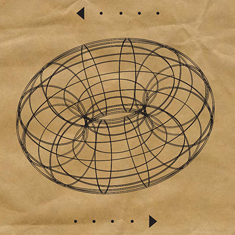
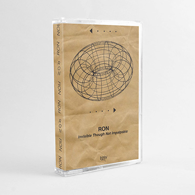

LA004


RON - Invisible Though Not Impalpable
//////////"What I love about this piece from local duo RON is how much it moves and flows and evolves over its nearly 19-minute running time. While I’m all for a little stagnation and repetition in music, it’s obvious that Carl Laukkanen and Sam Wenc put a lot of care into making sure this work had some momentum to it, letting it move from a quaintly minimalist guitar/synth beginning into more glitchier territory. And it all wraps up in a triumphant symphony of drones. I feel energized and excited by this brilliant work." - Bob Ham, Experimental Portland
\\\\\\\\\\